Construction | L or Lr | S or W f | D + L d, g |
Construction | L or Lr | S or W f | D + L d, g |
Roof members:
e | |||
Supporting plaster or stucco ceiling | l/360 | l/360 | l/240 |
Supporting nonplaster ceiling | l/240 | l/240 | l/180 |
Not supporting ceiling | l/180 | l/180 | l/120 |
Floor members | l/360 | — | l/240 |
Exterior walls: | |||
With plaster or stucco finishes | — | l/360 | — |
With other brittle finishes | — | l/240 | — |
With flexible finishes | — | l/120 | — |
Interior partitions:
b | |||
With plaster or stucco finishes | l/360 | — | — |
With other brittle finishes | l/240 | — | — |
With flexible finishes | l/120 | — | — |
Farm buildings | — | — | l/180 |
Greenhouses | — | — | l/120 |
Risk Category | Nature of Occupancy |
I |
Buildings and other structures that represent a low hazard to human life in the event of failure, including but not limited to: 1. Agricultural facilities. 2. Certain temporary facilities. 3. Minor storage facilities. |
II |
Buildings and other structures except those listed in Risk Categories I, III and IV. |
III |
Buildings and other structures that represent a substantial hazard to human life in the event of failure, including but not limited to: 1. Buildings and other structures whose primary occupancy is Places of Assembly with an occupant load greater than 300. 2. Buildings and other structures containing a Group E occupancy with an occupant load greater than 250. 3. Buildings and other structures containing educational occupancies for students above the 12th grade with an occupant load greater than 500. 4. Group I-2 occupancies with an occupant load of 50 or more resident care recipients but not having surgery or emergency treatment facilities. 5. Group I-3 occupancies. 6. Any other occupancy with an occupant load greater than 5,000.
a 7. Power-generating stations, water treatment facilities for potable water, waste water treatment facilities and other public utility facilities not included in Risk Category IV. 8. Buildings and other structures not included in Risk Category IV containing quantities of toxic or explosive materials that: Exceed maximum allowable quantities per control area as given in Table 307.1(1) or 307.1(2), or per outdoor control area in accordance with the New York City Fire Code; and Are sufficient to pose a threat to the public if released.
b |
IV |
Buildings and other structures designed as essential facilities, including but not limited to: 1. Group I-2 occupancies having surgery or emergency treatment facilities. 2. Fire, rescue, ambulance and police stations and emergency vehicle garages. 3. Designated earthquake, hurricane or other emergency shelters. 4. Designated emergency preparedness, communications and operations centers and other facilities required for emergency response. 5. Power-generating stations and other public utility facilities required as emergency backup facilities for Risk Category IV structures. 6. Buildings and other structures containing quantities of highly toxic materials that: Exceed maximum allowable quantities per control area as given in Table 307.1(2) or per outdoor control area in accordance with the New York City Fire Code; and Are sufficient to pose a threat to the public if released.
b 7. Aviation control towers, air traffic control centers and emergency aircraft hangars. 8. Buildings and other structures having critical national defense functions. 9. Water storage facilities and pump structures required to maintain water pressure for fire suppression. |
1.4 (D + F) | (Equation 16-1) |
1.2 (D + F) + 1.6 (L + H) + 0.5 (Lr
or S or R) | (Equation 16-2) |
1.2 (D + F) + 1.6 (Lr
or S or R) + 1.6H + (f1L or 0.5W) | (Equation 16-3) |
1.2 (D + F) + 1.0W + f1L + 1.6H + 0.5 (Lr
or S or R) | (Equation 16-4) |
1.2 (D + F) + 1.0E + f1L + 1.6H +f2S | (Equation 16-5) |
0.9D + 1.0W + 1.6H | (Equation 16-6) |
0.9 (D + F) + 1.0E + 1.6H | (Equation 16-7) |
1.2 (D + F) + 1.0W + 2.0F
a
+ f1L + 1.6H + 0.5 (Lr
or S or R) | (Equation 16-8) |
1.2 (D + F) + 0.5W + 1.0F
a
+ f1L + 1.6H + 0.5 (Lr
or S or R) | (Equation 16-9) |
0.9D + 1.0W + 2.0F
a
+ 1.6H | (Equation 16-10) |
0.9D + 0.5W + 1.0F
a
+ 1.6H | (Equation 16-11) |
D + F | (Equation 16-12) |
D + H + F + L | (Equation 16-13) |
D + H + F + (Lr
or S or R) | (Equation 16-14) |
D + H + F + 0.75 (L) + 0.75 (Lr
or S or R) | (Equation 16-15) |
D + H + F + (0.6W or 0.7E) | (Equation 16-16) |
D + H + F + 0.75 (W or 0.7E) + 0.75L + 0.75 (Lr
or S or R) | (Equation 16-17) |
D + H + F + 0.75 (0.7E) + 0.75L + 0.75S | (Equation 16-18) |
0.6D + 0.6W + H | (Equation 16-19) |
0.6 (D + F) + 0.7E + H | (Equation 16-20) |
D + H + F + 0.6W + 1.5Fa | (Equation 16-21) |
D + H + F + 0.6W + 0.75Fa | (Equation 16-22) |
D + H + F + 0.75 (0.6W) + 0.75L + 0.75 (Lr
or S or R) + 1.5Fa | (Equation 16-23)
|
D + H + F + 0.75 (0.6W) + 0.75L + 0.75 (Lr
or S or R) + 0.75Fa | (Equation 16-24) |
0.6D + 0.6W + H + 1.5Fa | (Equation 16-25) |
0.6D + 0.6W + H + 0.75Fa | (Equation 16-26) |
D + f1L + f2W | (Equation 16-27) |
1.2D + Ak
(0.5L or 0.2S) | (Equation 16-28) |
0.9D + Ak
+ 0.2W | (Equation 16-29) |
Occupancy or Use | Uniform (psf) | Concentrated pounds) |
Occupancy or Use | Uniform (psf) | Concentrated pounds) |
1. Apartments (see residential) | — | — |
2. Access floor systems | ||
Office use | 50 | 2,000 |
Computer use | 100 | 2,000 |
3. Armories and drill rooms | 150
n | — |
4. Assembly areas | — | |
Fixed seats (fastened to floor) | 60
m | |
Follow spot, projections and control rooms | 50 | |
Lobbies | 100
m | |
Movable seats | 100
m | |
Private assembly spaces, including conference rooms | 50 | |
Stages floors | 150
n | |
Platforms (assembly) | 100
m | |
Other assembly spaces | 100
m | |
5. Balconies and Decks
h | 1.5 times the live load for the occupancy served. Not required to exceed 100 psf | — |
6. Catwalks | 40 | 300 |
7. Cornices | 60 | — |
8. Corridors | — | |
First floor | 100 | |
Other floors | Same as occupancy served except as indicated | |
9. Dining rooms and restaurants | 100
m | — |
10. Dwellings (see residential) | — | — |
11. Elevator machine room and control room grating (on area of 2 inches by 2 inches) | — | 300 |
12. Equipment rooms, including pump rooms, generator rooms, transformer vaults, and areas for switch gear, ventilating, air conditioning, and similar electrical and mechanical equipment
| 75 | — |
13. Finish light floor plate construction (on area of 1 inch by 1 inch) | — | 200 |
14. Fire escapes (Exterior) | 100 | — |
On single-family dwellings only | 40 | |
15. Garages (passenger vehicles only) | 40
o | Note a |
Trucks and buses | See Section 1607.7 | |
16. Handrails, guards and grab bars | See Section 1607.8 | |
17. Helipads | See Section 1607.6 | |
18. Hospitals | ||
Corridors above first floor | 80 | 1,000 |
Operating rooms, laboratories | 60 | 1,000 |
Patient rooms
| 40 | 1,000 |
19. Hotels (see residential) | — | — |
20. Libraries | ||
Corridors above first floor | 80 | 1,000 |
Reading rooms | 60 | 1,000 |
Stack rooms | 150
b, n
| 1,000 |
21. Manufacturing | ||
Heavy | 250
n | 3,000 |
Light | 125
n | 2,000 |
22. Marquees, except one- and two-family dwellings | 75 | — |
23. Office buildings | ||
Corridors above first floor | 80 | 2,000 |
File and computer rooms shall be designed for heavier loads based on anticipated occupancy | — | — |
Lobbies and first-floor corridors | 100 | 2,000 |
Offices | 50 | 2,000 |
24. Penal Institutions | — | |
Cell blocks | 40 | |
Corridors | 100 | |
25. Recreational uses: | — | |
Bowling alleys, poolrooms and similar uses | 75
m | |
Dance halls and ballrooms | 100
m | |
Gymnasiums | 100
m | |
Ice skating rink | 250
n | |
Reviewing stands, grandstands and bleachers | 100
c, m | |
Roller skating rink | 100
m | |
Stadiums and arenas with fixed seats (fastened to floor) | 60
c, m | |
26. Residential | — | |
One- and two-family dwellings | ||
Uninhabitable attics without storage
i | 10 | |
Uninhabitable attics with storage
i, j, k | 20 | |
Habitable attics and sleeping areas
k | 30 | |
Canopies, including marquees | 20 | |
All other areas | 40 | |
Hotels and multifamily dwellings | ||
Private rooms and corridors serving them | 40 | |
Public rooms and corridors serving them | 100 | |
27. Roofs | ||
All roof surfaces subject to maintenance workers | 300 | |
Awnings and canopies: | ||
Fabric construction supported by a skeleton structure | 5
m | |
All other construction, except one- and two-family dwellings | 20 | |
Ordinary flat, pitched, and curved roofs (that are not occupiable) | 20 | |
Primary roof members exposed to a work floor | ||
Single panel point of lower chord of roof trusses or any point along primary structural members supporting roofs over manufacturing, storage warehouses, and repair garages | 2,000 | |
All other primary roof members | 300 | |
Occupiable roofs: | ||
Roof gardens | 100 | |
Assembly areas | 100
m | |
All other similar areas | Note l | Note l |
28. Schools | ||
Classrooms | 40 | 1,000 |
Corridors above first floor | 80 | 1,000 |
First-floor corridors | 100 | 1,000 |
29. Scuttles, skylight ribs and accessible ceilings | — | 200 |
30. Sidewalks, vehicular driveways and yards, subject to trucking
| 300
d, m | 8,000
e
or 20,000
d |
31. Stairs and exits | ||
One- and two-family dwellings | 40 | 300
f |
All other | 100 | 300
f |
32. Storage warehouses (shall be designed for heavier loads if required for anticipated storage) | — | |
Heavy | 250
n | |
Light | 125
n | |
33. Stores | ||
Retail | ||
First floor | 100 | 1,000 |
Upper floors | 75 | 1,000 |
Wholesale, all floors | 125
n | 1,000 |
34. Vehicle barriers | See Section 1607.9 | |
35. Walkways and elevated platforms (other than exitways) | 60 | — |
36. Yards and terraces, pedestrians | 100
m | — |
Partition Weight (plf) | Equivalent Uniform Load (psf) (to be added to floor dead and live loads) |
50 or less | 0 |
51 to 100 | 6 |
101 to 200 | 12 |
201 to 350 | 20 |
Greater than 350 | 20 plus a concentrated live load of the weight in excess of 350 pfl. |
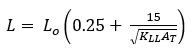
(Equation 16-30)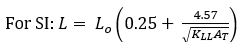
Element | KLL |
Interior columns Exterior columns without cantilever slabs | 4 4 |
Edge columns with cantilever slabs | 3 |
Corner columns with cantilever slabs Edge beams without cantilever slabs Interior beams | 2 2 2 |
All other members not identified above including: Edge beams with cantilever slabs Cantilever beams One-way slabs Two-way slabs Members without provisions for continuous shear transfer normal to their span | 1 |
Monorail cranes (powered) | 25 percent |
Cab-operated or remotely operated bridge cranes (powered) | 25 percent |
Pendant-operated bridge cranes (powered) | 10 percent |
Bridge cranes or monorail cranes with hand-geared bridge, trolley and hoist percent | 0 percent |
Fastener Type | Fastener Spacing (inches) | ||
Panel Span ≤ 4 feet | 4 feet < Panel Span ≤ 6 feet | 6 feet < Panel Span ≤ 8 feet | |
No. 8 wood-screw-based anchor with 2-inch embedment length | 16 | 10 | 8 |
No. 10 wood-screw-based anchor with 2-inch embedment length | 16 | 12 | 9 |
1/4-inch diameter lag-screw-based anchor with 2-inch embedment length | 16 | 16 | 16 |
Risk Category | Basic Design Wind Speed, mph (3-sec gust, 33 ft. for Exposure Category C) | Mean Recurrence Interval, years | Probability of Exceedance in 50 years, % |
I | 110 | 300 | 15 |
II | 117 | 700 | 7 |
III | 127 | 1,700 | 3 |
IV | 132 | 3,000 | 1.6 |
Mean Recurrence Interval (years) | Serviceability Design Wind Speed, mph (3-sec gust, 33 ft. for Exposure Category C) |
10 | 80 |
25 | 87 |
50 | 93 |
100 | 100 |
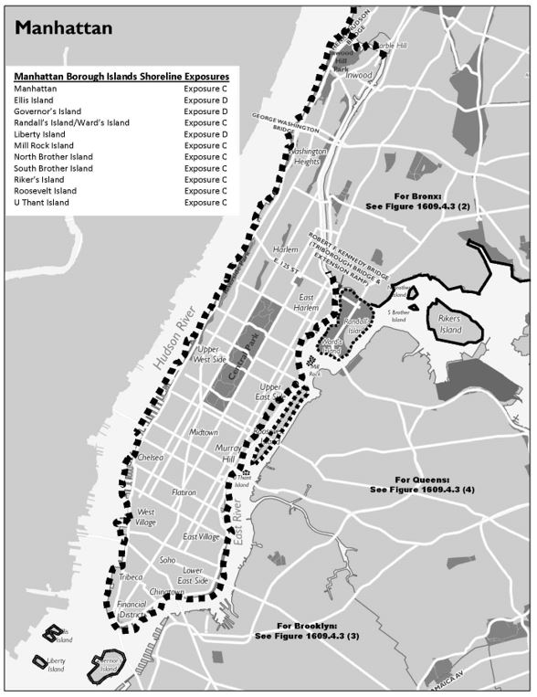
Exposure C: Buildings within a distance of 2,600 feet from shoreline. | |
Exposure C: Buildings within a distance of 2,600 feet or 20 times building height from shoreline, whichever is greater | |
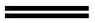 | Exposure D: Coastal zone, see Section 1609.4 |
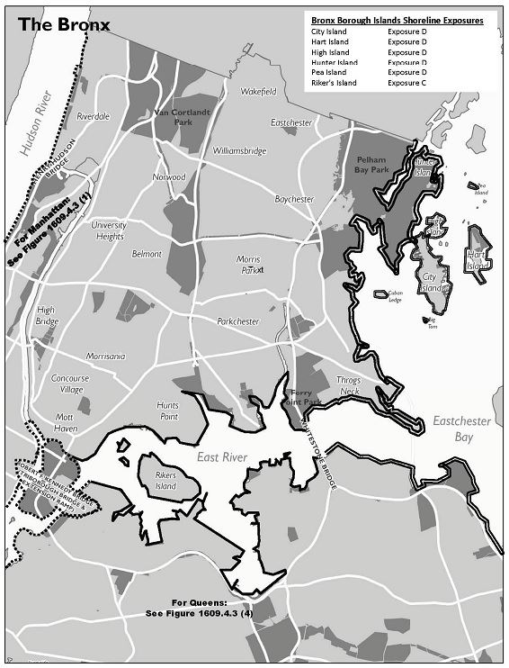
Exposure C: Buildings within a distance of 2,600 feet from shoreline. | |
Exposure C: Buildings within a distance of 2,600 feet or 20 times building height from shoreline, whichever is greater | |
Exposure D: Coastal zone, see Section 1609.4 |
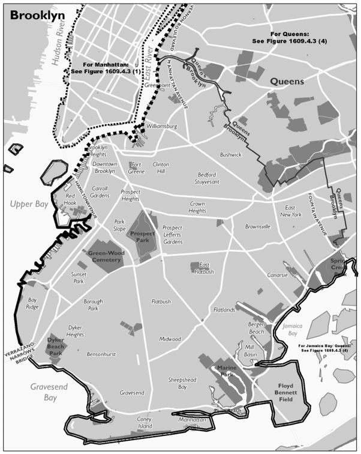
Exposure C: Buildings within a distance of 2,600 feet from shoreline. | |
Exposure C: Buildings within a distance of 2,600 feet or 20 times building height from shoreline, whichever is greater | |
Exposure D: Coastal zone, see Section 1609.4 |
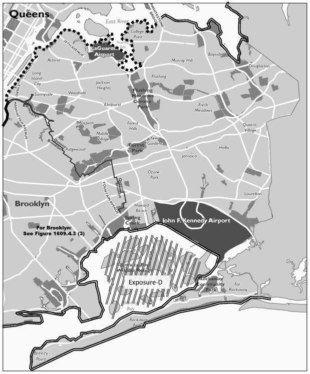
Exposure C: Buildings within a distance of 2,600 feet from shoreline. | |
Exposure C: Buildings within a distance of 2,600 feet or 20 times building height from shoreline, whichever is greater | |
Exposure D: Coastal zone, see Section 1609.4 |
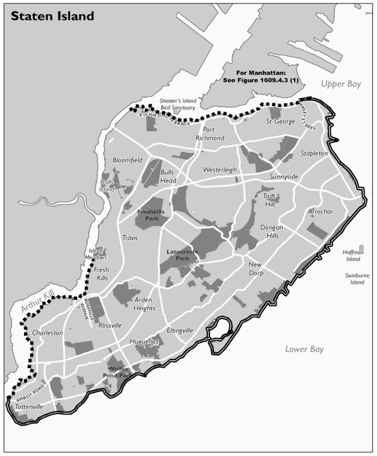
Exposure C: Buildings within a distance of 2,600 feet from shoreline. | |
Exposure C: Buildings within a distance of 2,600 feet or 20 times building height from shoreline, whichever is greater | |
Exposure D: Coastal zone, see Section 1609.4 |
Net Pressure Coefficient (GCpn) | h/hc | ||||||
2 | 3 | 6 | 12 | 18 | 24 | 30 | |
Upward | -0.60 | -0.70 | -0.95 | -1.04 | -1.16 | -1.3 | -1.3 |
Downward | 0.90 | 0.90 | 0.90 | 0.90 | 0.90 | 0.90 | 0.90 |
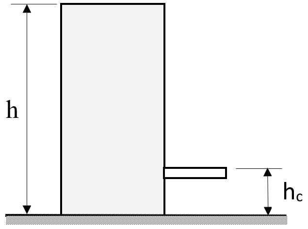
Description of Backfill Material c | Unified Soil Classification | Design Lateral Soil Load a (pound per square foot per foot of depth) | |
Active pressure | At-rest pressure | ||
Description of Backfill Material c | Unified Soil Classification | Design Lateral Soil Load a (pound per square foot per foot of depth) | |
Active pressure | At-rest pressure | ||
Well-graded, clean gravels; gravel-sand mixes | GW | 30 | 60 |
Poorly graded clean gravels; gravel-sand mixes | GP | 30 | 60 |
Silty gravels, poorly graded gravel-sand mixes | GM | 40 | 60 |
Clayey gravels, poorly graded gravel-and-clay mixes | GC | 45 | 60 |
Well-graded, clean sands; gravelly sand mixes | SW | 30 | 60 |
Poorly graded clean sands; sand-gravel mixes | SP | 30 | 60 |
Silty sands, poorly graded sand-silt mixes | SM | 45 | 60 |
Sand-silt clay mix with plastic fines | SM-SC | 45 | 100 |
Clayey sands, poorly graded sand-clay mixes | SC | 60 | 100 |
Inorganic silts and clayey silts | ML | 45 | 100 |
Mixture of inorganic silt and clay | ML-CL | 60 | 100 |
Inorganic clays of low to medium plasticity | CL | 60 | 100 |
Organic silts and silt clays, low plasticity | OL | Note b | Note b |
Inorganic clayey silts, elastic silts | MH | Note b | Note b |
Inorganic clays of high plasticity | CH | Note b | Note b |
Organic clays and silty clays | OH | Note b | Note b |
Site Class | Fa |
Site Class | Fa |
A | 0.80 |
B (V
s
measured) | 0.90 |
B (V
s
unmeasured) | 1.00 |
C | 1.30 |
D | 1.57 |
E | 2.28 |
F | Note a |
Site Class | Fv
|
Site Class | Fv
|
A | 0.80 |
B (V
s
measured) | 0.90 |
B (V
s
unmeasured) | 1.00 |
C | 1.50 |
D | 2.40 |
E | 4.20 |
F | Note a |
vsi | = | The shear wave velocity in feet per second (m/s). |
dI | = | The thickness of any layer between 0 and 100 feet (30 480 mm). |
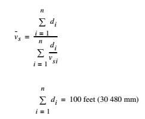
(Equation 16-48)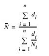
(Equation 16-49)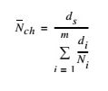
(Equation 16-50)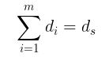
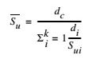
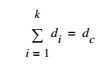
Site Class | vs | N or Nch | sv |
E | < 600 ft/s | < 15 | < 1,000 psf |
D | 600 to 1,200 ft/s | 15 to 50 | 1,000 to 2,000 psf |
C | 1,200 to 2,500 ft/s | > 50 | > 2,000 |
Risk Category | Site Class | ||
A | B / C / D | E | |
I / II / III | A | B | C |
IV | A | C | D |
Seismic Force-Resisting System | ASCE 7 Section Where Detailing Requirements are Specified | Response Modification Coefficient | Over-strength Factor | Deflection Amplification Factor | Structural System Limitations Including Structural Height, hn (ft), Limits c | ||
Seismic Design Category | |||||||
Seismic Force-Resisting System | ASCE 7 Section Where Detailing Requirements are Specified | Response Modification Coefficient | Over-strength Factor | Deflection Amplification Factor | Structural System Limitations Including Structural Height, hn (ft), Limits c | ||
Seismic Design Category | |||||||
A. Bearing Wall Systems | — | R a | S0 g | Cc b | B | C | D d
|
1. Special reinforced concrete shear walls
l, m | 14.2 | 5 | 2.5 | 5 | NL | NL | 160 |
2. Ordinary reinforced concrete shear walls
l | 14.2 | 4 | 2.5 | 4 | NL | NL | NP |
3. Detailed plain concrete shear walls
l | 14.2 | 2 | 2.5 | 2 | NL | NP | NP |
4. Ordinary plain concrete shear walls
l | 14.2 | 1.5 | 2.5 | 1.5 | NL | NP | NP |
5. Intermediate precast shear walls
l | 14.2 | 4 | 2.5 | 4 | NL | NL | 40
k |
6. Ordinary precast shear walls
l | 14.2 | 3 | 2.5 | 3 | NL | NP | NP |
7. Special reinforced masonry shear walls | 14.4 | 5 | 2.5 | 3.5 | NL | NL | 160 |
8. Intermediate reinforced masonry shear walls | 14.4 | 3.5 | 2.5 | 2.25 | NL | NL | NP |
9. Ordinary reinforced masonry shear walls | 14.4 | 2 | 2.5 | 1.75 | NL | 160 | NP |
10. Detailed plain masonry shear walls | 14.4 | 2 | 2.5 | 1.75 | NL | NP | NP |
11. Ordinary plain masonry shear walls | 14.4 | 1.5 | 2.5 | 1.25 | NL | NP | NP |
12. Prestressed masonry shear walls | 14.4 | 1.5 | 2.5 | 1.75 | NL | NP | NP |
13. Ordinary reinforced Autoclaved Aerated Concrete (AAC) masonry shear walls | 14.4 | 2 | 2.5 | 2 | NL | 35 | NP |
14. Ordinary plain (unreinforced) Autoclaved Aerated Concrete (AAC) masonry shear walls | 14.4 | 1.5 | 2.5 | 1.5 | NL | NP | NP |
15. Light-frame (wood) walls sheathed with wood structural panels rated for shear resistance or steel sheets | 14.1 and 14.5 | 6.5 | 3 | 4 | NL | NL | 65 |
16. Light-frame (cold-formed steel) walls sheathed with wood structural panels rated for shear resistance or steel sheets | 14.1 | 6.5 | 3 | 4 | NL | NL | 65 |
17. Light-frame walls with shear panels of all other materials | 14.1 and 14. | 2 | 2.5 | 2 | NL | NL | 35 |
18. Light-frame (cold-formed steel) wall systems using flat strap bracing | 14.1 | 4 | 2 | 3.5 | NL | NL | 65 |
B. Building Frame Systems | — | R a | S0 g | Cc b | B | C | D d |
1. Steel eccentrically braced frames | 14.1 | 8 | 2 | 4 | NL | NL | 160 |
2. Steel special concentrically braced frames | 14.1 | 6 | 2 | 5 | NL | NL | 160 |
3. Steel ordinary concentrically braced frames | 14.1 | 3.25 | 2 | 3.25 | NL | NL | 35
j |
4. Special reinforced concrete shear walls
l, m | 14.2 | 6 | 2.5 | 5 | NL | NL | 160 |
5. Ordinary reinforced concrete shear walls
l | 14.2 | 5 | 2.5 | 4.5 | NL | NL | NP |
6. Detailed plain concrete shear walls
l | 14.2 and 14.2.2.7 | 2 | 2.5 | 2 | NL | NP | NP |
7. Ordinary plain concrete shear walls
l | 14.2 | 1.5 | 2.5 | 1.5 | NL | NP | NP |
8. Intermediate precast shear walls
l | 14.2 | 5 | 2.5 | 4.5 | NL | NL | 40
k |
9. Ordinary precast shear walls
l | 14.2 | 4 | 2.5 | 4 | NL | NP | NP |
10. Steel and concrete composite eccentrically braced frames | 14.3 | 8 | 2.5 | 4 | NL | NL | 160 |
11. Steel and concrete composite special concentrically braced frames | 14.3 | 5 | 2 | 4.5 | NL | NL | 160 |
12. Steel and concrete composite ordinary braced frames | 14.3 | 3 | 2 | 3 | NL | NL | NP |
13. Steel and concrete composite plate shear walls | 14.3 | 6.5 | 2.5 | 5.5 | NL | NL | 160 |
14. Steel and concrete composite special shear walls | 14.3 | 6 | 2.5 | 5 | NL | NL | 160 |
15. Steel and concrete composite ordinary shear walls | 14.3 | 5 | 2.5 | 4.5 | NL | NL | NP |
16. Special reinforced masonry shear walls | 14.4 | 5.5 | 2.5 | 4 | NL | NL | 160 |
17. Intermediate reinforced masonry shear walls | 14.4 | 4 | 2.5 | 4 | NL | NL | NP |
18. Ordinary reinforced masonry shear walls | 14.4 | 2 | 2.5 | 2 | NL | 160 | NP |
19. Detailed plain masonry shear walls | 14.4 | 2 | 2.5 | 2 | NL | NP | NP |
20. Ordinary plain masonry shear walls | 14.4 | 1.5 | 2.5 | 1.25 | NL | NP | NP |
21. Prestressed masonry shear walls | 14.4 | 1.5 | 2.5 | 1.75 | NL | NP | NP |
22. Light-frame (wood) walls sheathed with wood structural panels rated for shear resistance | 14.5 | 7 | 2.5 | 4.5 | NL | NL | 65 |
23. Light-frame (cold-formed steel) walls sheathed with wood structural panels rated for shear resistance or steel sheets | 14.1 | 7 | 2.5 | 4.5 | NL | NL | 65 |
24. Light-frame walls with shear panels of all other materials | 14.1 and 14.5 | 2.5 | 2.5 | 2.5 | NL | NL | 35 |
25. Steel buckling-restrained braced frames | 14.1 | 8 | 2.5 | 5 | NL | NL | 160 |
26. Steel special plate shear walls | 14.1 | 7 | 2 | 6 | NL | NL | 160 |
C. Moment-Resisting Frame Systems | — | R a | S0 g | Cc b | B | C | D d |
1. Steel special moment frames | 14.1 and 12.2.5.5 | 8 | 3 | 5.5 | NL | NL | NL |
2. Steel special truss moment frames | 14.1 | 7 | 3 | 5.5 | NL | NL | 160 |
3. Steel intermediate moment frames | 14.1 and 12.2.5.7 | 4.5 | 3 | 4 | NL | NL | 35
h |
4. Steel ordinary steel moment frames | 14.1 and 12.2.5.6 | 3.5 | 3 | 3 | NL | NL | NP
i |
5. Special reinforced concrete moment frames
n | 14.2 and 12.2.5.5 | 8 | 3 | 5.5 | NL | NL | NL |
6. Intermediate reinforced concrete moment frames | 14.2 | 5 | 3 | 4.5 | NL | NL | NP |
7. Ordinary reinforced concrete moment frames | 14.2 | 3 | 3 | 2.5 | NL | NP | NP |
8. Steel and concrete composite special moment frames | 14.3 and 12.2.5.5 | 8 | 3 | 5.5 | NL | NL | NL |
9. Steel and concrete composite intermediate moment frames | 14.3 | 5 | 3 | 4.5 | NL | NL | NP |
10. Steel and concrete composite partially restrained moment frames | 14.3 | 6 | 3 | 5.5 | 160 | 160 | 100 |
11. Steel and concrete composite ordinary moment frames | 14.3 | 3 | 3 | 2.5 | NL | NP | NP |
12. Cold-formed steel – special bolted moment frame
p | 14.1 | 3.5 | 3
o | 3.5 | 35 | 35 | 35 |
D. Dual Systems with Special Moment Frames Capable of Resisting at Least 25% of Prescribed Seismic Forces | 12.2.5.1 | R a | S0 g | Cc b | B | C | D d
|
1. Steel eccentrically braced frames | 14.1 | 8 | 2.5 | 4 | NL | NL | NL |
2. Steel special concentrically braced frames | 14.1 | 7 | 2.5 | 5.5 | NL | NL | NL |
3. Special reinforced concrete shear walls
l | 14.2 | 7 | 2.5 | 5.5 | NL | NL | NL |
4. Ordinary reinforced concrete shear walls
l | 14.2 | 6 | 2.5 | 5 | NL | NL | NP |
5. Steel and concrete composite eccentrically braced frames | 14.3 | 8 | 2.5 | 4 | NL | NL | NL |
6. Steel and concrete composite special concentrically braced frames | 14.3 | 6 | 2.5 | 5 | NL | NL | NL |
7. Steel and concrete composite plate shear walls | 14.3 | 7.5 | 2.5 | 6 | NL | NL | NL |
8. Steel and concrete composite special shear walls | 14.3 | 7 | 2.5 | 6 | NL | NL | NL |
9. Steel and concrete composite ordinary shear walls | 14.3 | 6 | 2.5 | 5 | NL | NL | NP |
10. Special reinforced masonry shear walls | 14.4 | 5.5 | 3 | 5 | NL | NL | NL |
11. Intermediate reinforced masonry shear walls | 14.4 | 4 | 3 | 3.5 | NL | NL | NP |
12. Steel buckling-restrained braced frames | 14.1 | 8 | 2.5 | 5 | NL | NL | NL |
13. Steel special plate shear walls | 14.1 | 8 | 2.5 | 6.5 | NL | NL | NL |
E. Dual Systems with Intermediate Moment Frames Capable of Resisting at Least 25% of Prescribed Seismic Forces | 12.2.5.1 | R a | S0 g | Cc b | B | C | D d
|
1. Steel special concentrically braced frames
f | 14.1 | 6 | 2.5 | 5 | NL | NL | 35 |
2. Special reinforced concrete shear walls
l | 14.2 | 6.5 | 2.5 | 5 | NL | NL | 160 |
3. Ordinary reinforced masonry shear walls | 14.4 | 3 | 3 | 2.5 | NL | 160 | NP |
4. Intermediate reinforced masonry shear walls | 14.4 | 3.5 | 3 | 3 | NL | NL | NP |
5. Steel and concrete composite special concentrically braced frames | 14.3 | 5.5 | 2.5 | 4.5 | NL | NL | NL |
6. Steel and concrete composite ordinary braced frames | 14.3 | 3.5 | 2.5 | 3 | NL | NL | NP |
7. Steel and concrete composite ordinary shear walls | 14.3 | 5 | 3 | 4.5 | NL | NL | NP |
8. Ordinary reinforced concrete shear walls
l | 14.2 | 5.5 | 2.5 | 4.5 | NL | NL | NP |
F. Shear Wall-Frame Interactive System with Ordinary Reinforced Concrete Moment Frames and Ordinary Reinforced Concrete Shear Walls l | 14.2 and 12.2.5.8 | 4.5 | 2.5 | 4 | NL | NP | NP |
G. Cantilevered Column Systems Detailed to Conform to the Requirements for: | 12.2.5.2 | R a | S0 g | Cc b | B | C | D d
|
1. Steel special cantilever column systems | 14.1 | 2.5 | 1.25 | 2.5 | 35 | 35 | 35 |
2. Steel ordinary cantilever column systems | 14.1 | 1.25 | 1.25 | 1.25 | 35 | 35 | NP i |
3. Special reinforced concrete moment frames
n | 14.2 and 12.2.5.5 | 2.5 | 1.25 | 2.5 | 35 | 35 | 35 |
4. Intermediate reinforced concrete moment frames | 14.2 | 1.5 | 1.25 | 1.5 | 35 | 35 | NP |
5. Ordinary reinforced concrete moment frames | 14.2 | 1 | 1.25 | 1 | 35 | NP | NP |
6. Timber frames | 14.5 | 1.5 | 1.5 | 1.5 | 35 | 35 | 35 |
H. Steel Systems not Specifically Detailed for Seismic Resistance, Excluding Cantilever Column Systems | 14.1 | 3 | 3 | 3 | NL | NL | NP |
Element | Response Ratio | Rotation |
Element | Response Ratio | Rotation |
Concrete Slabs | μ
< 10 | Ø < 4° |
Post-Tensioned Beams | μ
< 2 | Ø < 1.5° |
Concrete Beams | μ
< 20 | Ø < 6° |
Concrete Columns | μ
< 2 | Ø < 6° |
Long Span Acoustical Deck | μ
< 2 | Ø < 3° |
Open Web Steel Joists | μ
< 2 | Ø < 6° |
Steel Beams | μ
< 20 | Ø < 10° |
Steel Columns | μ
< 5 | Ø < 6° |